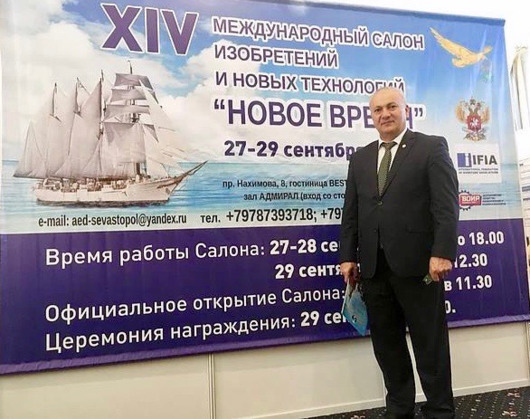

Достойное признание новых достижений Доктора Ибадова
Уважаемый академик Яшар Садай оглы Ибадов вот уже 14-й
раз принимает участие в работе Международного салона изобретений и новых технологий «Новое
Время». Каждый год Яшар Ибадов представляет свои новые изобретения и разработки в области
информационной медицины и нанотехнологий. В этом году с 27 по 29 сентября Яшар Ибадов снова
участвовал в этой выставке, которая с успехом прошла в г. Севастополе на берегу Черного
моря.
Доктор Ибадов, директор лаборатории психогигиены и
медико-психологической диагностики Института Образования Министерства Образования
Азербайджанской республики, представил на Выставку две разработки:
1. Пиктографический резонатор-корректор, созданный в
соавторстве с академиком В.П. Гочем и Д.Л. Катамановой.
2. Способ гармонизации работы обоих полушарий мозга с
помощью мобильного приложения «Гармония», разработанный в соавторстве с Д.Л. Катамановой и З.Н.
Бекировой.

Новые разработки доктора Яшара вызвали большой
интерес и получили заслуженное признание, награды и знаки отличия.
Пиктографический резонатор-корректор. В основе Метода
формирование Изначальной матрицы с помощью Новых Рун в виде координатной сетки, которая является
системой отсчета, что позволяет отображать процессуальность метаморфоз Тотальности на предельных
фазовых границах. Совместное использование Единых технологий «Теории Причинности» В.П. Гоча и
метода психографии, разработанного Я.С. Ибадовым, эффективно взаимодополняет теоретическую базу
и практическую работу каждого подхода по исследованию живых систем. Для получения большего
эффекта и более плодотворного внедрения в практике Метода Фазовых метаморфоз создан
пиктографический резонатор.
За разработку «Пиктографический резонатор-корректор»
Яшару Ибадову вручены Золотая медаль Международного салона изобретений и новых технологий «Новое
Время», Золотая медаль Министерства сельского хозяйства РФ, Диплом столичного союза
работодателей.
За разработку «Способ гармонизации обоих полушарий
мозга с помощью мобильного приложения «Гармония» уважаемый Яшар Ибадов награжден Золотой медалью
Международного салона изобретений и новых технологий «Новое Время».
Приложение «Гармония» создано в помощь людям, которые
ведут активный образ жизни и хотели бы оптимизировать процессы восстановления организма в
мобильных условиях. Это возможно с помощью приложения, установленного на компьютер или смартфон.
Интерактивное приложение «Гармония» улучшает функциональное состояние и повышает адаптационные
способности организма через визуализацию гармоничных линий, символов, образов, оптимизируя связь
между полушариями головного мозга. Приложение предназначено для людей разного возраста и
социального положения: руководителям, предпринимателям, врачам, учителям, людям, управляющим
транспортными средствами.
Рекомендуем применять «Гармонию» людям при
гипеактивности, трудностях в учебе, при трудностях переходного возраста, депрессии. Людям
преклонного возраста «Гармония» полезна для улучшения памяти, внимания, жизненного тонуса и
профилактики сосудистых расстройств.
Северо-западный Совет ВОИР по вопросам изобретательства
и рационализаторства, интеллектуальной собственности, научного и технического творчества отметил
заслуги Яшара Ибадова Грамотой за высокие достижения в области изобретательской
деятельности.
Специальным дипломом и Кубком от лица Международной
организации «Мировой форум исследователей и изобретателей» награжден Яшар Ибадов «за его научные
работы и инновации, вклад в международное научно-техническое сотрудничество».
Яшар Ибадов награжден также медалью «Михаила
Васильевича Ломоносова» за заслуги в научной деятельности. Эта награда является общественным
признанием достижений в области фундаментальных и прикладных исследований, реализации и
внедрению образовательных программ. Высокий профессионализм, систематический, интегрированный и
организованный стиль работы профессора Ибадова, направленные на непрерывное улучшение качества
научной и образовательной продукции явились основанием для вручения медали.
Поздравляем уважаемого Яшара Ибадов, академика Оксфордского Университета, руководителя Международной Школы Альтернативной Психологии, профессора, доктора медико-биологических наук, директора лаборатории психогигиены и медико-психологической диагностики Института Образования Азербайджана, с новыми научными достижениями! Желаем добра и счастья, творческих успехов!